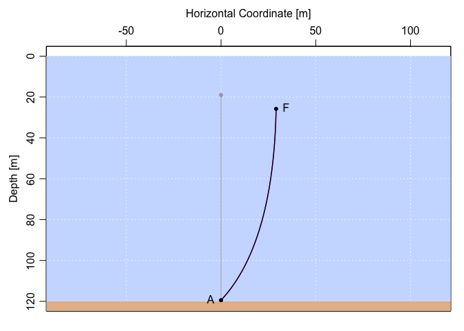

The goal of the mooring package is to facilitate computations of the extent of ‘knockdown’ of oceanographic moorings caused by ocean currents that exert drag on mooring elements.
In addition to a fairly broad suite of functions, the package also provides crude interactive tools for exploring simple moorings.
Conventional R help is provided, in addition to several vignettes.
At the moment, mooring only handles bottom-anchored moorings in which the top buoyancy element is below the sub-surface.
Installation
You can install the development version of mooring from GitHub by typing the following in an R console. (Uncomment the first line, if the devtools package is not already installed on your computer.)
# install.packages("devtools")
devtools::install_github("dankelley/mooring")Example
The following shows how to assess the knockdown of a mooring consisting of a bottom anchor, 100 m of wire, and a 20-inch diameter float, in a region of water depth 120 m with a constant current of 0.5 m/s (roughly 1 knot). To learn more, (a) increase the current to 1 m/s and observe changes in the mooring shape, (b) set the which argument of plot.mooring(), to focus more directly on the knockdown, then (c) explore the effects of specifying depth-dependent currents in the knockdown() call.
library(mooring)
# Design a mooring with a 20-inch float attached to a bottom anchor with 100m of wire cable.
m <- mooring(anchor(depth=120), wire(length=100), float("HMB 20"))
# Discretise wire portion (to 1m spacing), then apply a 0.5 m/s current.
md <- discretise(m)
mdk <- knockdown(md, u=0.5)
par(mfrow=c(1, 2))
plot(md, fancy=TRUE)
plot(mdk, fancy=TRUE)